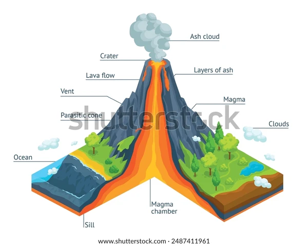

Stratovolcanoes
Strato volcanoes comprise the largest percentage (≈60%) of the Earth's individual volcanoes and are characterized by eruptions of andesite and dacite — lavas that are cooler and more viscous than basalt. These more viscous lavas allow gas pressures to build up to high levels; therefore these volcanoes often suffer explosive eruptions.
|  |
Strato volcanoes are usually made of alternating layers of lava and pyroclastic material. The layering of these products gives them the other common name of composite volcanoes. The colored zones in the diagram represent different eruption products and lava domes. Each eruption, regardless of what it produces, is fed from a magma chamber by a dike. Most dikes come up through the center of the volcano and therefore most eruptions occur from a crater at or near the summit. Some dikes, however, head off sideways and feed flank eruptions. |
|
Right: This is a pit dug into the ground at Cotopaxi, a large strato volcano near Quito, Ecuador. The pit shows several ash layers of differing grain size and color — evidence of multiple eruptions. The lava at strato volcanoes occasionally forms 'a'a', but more commonly it piles up in the vent to form volcanic domes. Strato volcanoes are common along subduction zones. Examples include Mt. St. Helens, Mt. Rainier, Pinatubo, Mt. Fuji, Merapi, Galeras, and Cotopaxi. |

|
For more information see local geology references or click the images (if provided) to view larger versions.